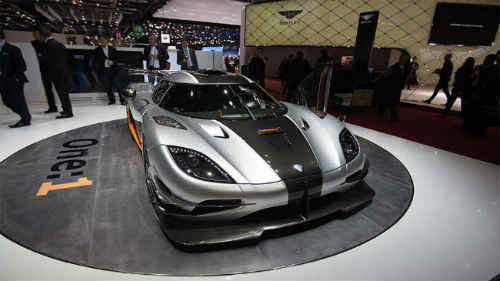
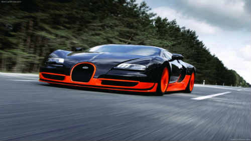
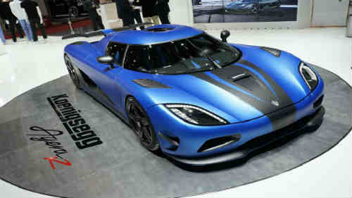
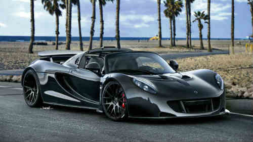
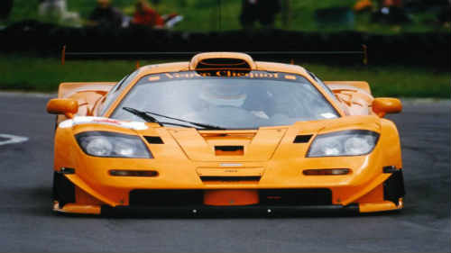

A continuación se mostrará una imagen y una pequeña descripción de los cinco coches más rápidos del mercado actual
| Konigsegg one-1 | Hasta marzo de 2014, la marca sueca Koenigsegg era superada por el potente Hennessey Venom GT, con 427,6 km/h. Decimos hasta marzo porque en el Salón de Ginebra 2014 se estrenó el Koenigsegg One:1, un superdeportivo que alcanza una velocidad máxima de 450,62 km/h. Sí, tal cual. Una cifra récord en el mundo de los automóviles pero que se ha hecho realidad. El Koenigsegg One:1 es un superdeportivo de 1.360 HP 7500 rpm y un asombroso torque de 1.000 Nm 3000-7500 rpm, resultado de un motor V8 turbocargado de 5.0 litros y complementado a la perfección con una transmisión de doble embrague de 7 velocidades. Y si pensamos que el peso de este nuevo auto es de 1.360 kilos, entonces tenemos una bestia que mueve 1 kilo por cada HP. Tal superdeportivo como lo es este Koenigsegg One:1 ha sido fabricado para conmemorar los 20 años de vida de la marca sueca, y sólo se fabricarán 6 unidades. |
| Bugatti veyron super sport | Si pensaste que Bugatti era el número #1 entre los autos o carros más rápidos del mundo, lo sentimos. Ocurre que la velocidad de más de 430 km/h que alcanzó el Bugatti Veyron Super Sports se consiguió sin limitador de velocidad. El Bugatti Veyron Super Sports, tal cual como se vende a los clientes, alcanza una velocidad máxima de 415 km/h y una aceleración de 0 a 100 km/h en 2,5 segundos. muy exclusivo y con especificaciones técnicas más que agresivas: V8 TwinTurbo de 1.200 HP. |
| Konigsegg Agera R | La fabricante sueca Koenigsegg fabricó en 2011 el Agera R, uno de los deportivos más destacados de Europa y que ha logrado romper numerosos récords de velocidad en el viejo continente. Desde su fabricación, su velocidad máxima se ha establecido en 418 km/h. Sin embargo, el propio fabricante asegura que puede alcanzar "aproximadamente" unos 440 km/h. Claro, no se ha llegado a dicha cifra, pero es lo que dice la marca. Algunos de sus récords: 0-3oo km/h en 14,53 segundos y de los 300 km/h a 0 km/h en 6,66 segundos. ¿Qué hace que sea tan potente? El Koenigsegg Agera R cuenta con un motor V8 de 5.0 litros de aluminio, 4 válvulas por cilindro, DOHC, fibra de carbono en todo su chasis combinado con aluminio y una potencia de 1.140 HP @7.100 rpm. Hace 6 km/litro. Uno de los coches más rápidos del mundo. |
Hennesset Venom GT | El Hennessey Venom GT es el segundo vehículo más veloz, el auto más rápido del mundo... hasta ahora. En 2013, alcanzó en el aeródromo NAS de California una máxima de 427,6 km/h, en una pista de 3,2 kilómetros, algo así como 2 millas. Este superdeportivo es un V8 de 7.0 litros, con 1.224 HP y ojo que desde Hennessey afirman que este modelo puede alcanzar los 447 km/h. Hay que ver para creer, pero a este ritmo... ¡que avisen para ir a grabar videos! Por el momento, hay que conformarse con saber que su aceleración de 0 a 100 km/h es de 2,7 segundos y el cuarto de milla lo hace en 9,92 segundos a 262 km/h. |
| McLaren F1 | Durante la década de los '90, McLaren fabricó poco más de 100 unidades de uno de los vehículos que hasta hoy sigue siendo uno de los más rápidos del mundo. ¿De qué se trata esto? El McLaren es un superdeportivo V12 de 6.1 litros S70/2, el cual tiene una velocidad de 386 km/h. |
McLaren F1 |
|
Koenigsegg One-1 |
|
Bugatti Veyron Super Sports |
|
Koenigsegg Agera R |
|
Hennessey Venom GT |
|